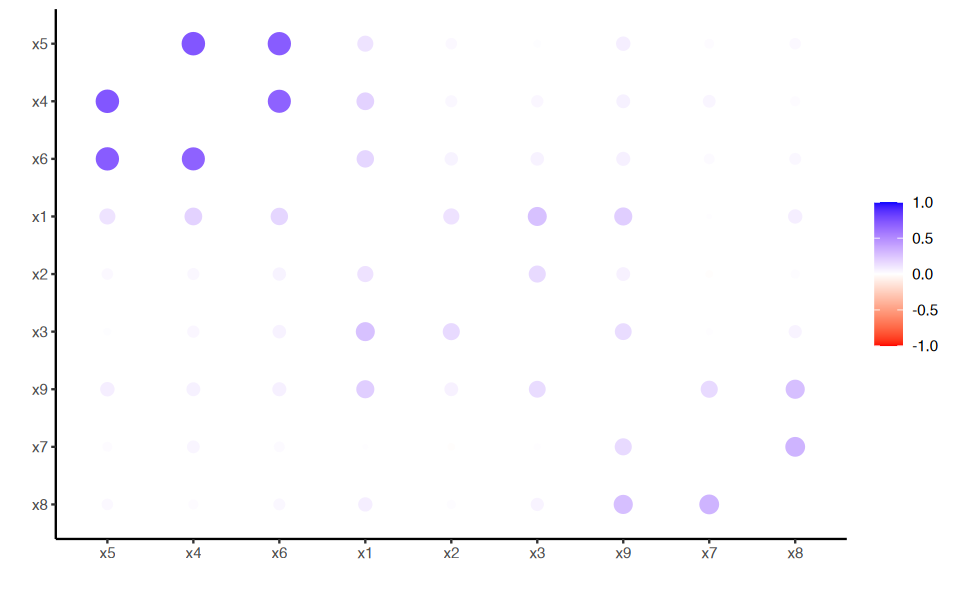

# Carica il file _common.R per impostazioni di pacchetti e opzioni
here::here("code", "_common.R") |> source()
# Carica pacchetti aggiuntivi
pacman::p_load(lavaan, corrr, psych)31 Valutazione della matrice di correlazione
Prerequisiti
Concetti e Competenze Chiave
Preparazione del Notebook
31.1 Introduzione
Prima di eseguire un’analisi fattoriale, è importante esaminare la matrice di correlazione tra le variabili. Se il determinante della matrice è nullo, l’analisi fattoriale non può essere eseguita. In caso contrario, è necessario valutare se le correlazioni campionarie sono sufficientemente grandi da giustificare l’analisi fattoriale. Se le correlazioni tra gli item sono modeste, la soluzione fornita dall’analisi fattoriale potrebbe non essere parsimoniosa. Per valutare questo, si può ispezionare visivamente la matrice di correlazione e utilizzare due test: il test della sfericità di Bartlett e il test Kaiser-Meyer-Olkin.
31.2 Ispezione visiva della matrice di correlazione
L’ispezione visiva della matrice di correlazione viene effettuata per verificare la presenza di blocchi di correlazioni alte tra loro e basse con le altre variabili. Ciò suggerisce la presenza di più fattori comuni.
Per fare un esempio, consideriamo il dataset HolzingerSwineford1939. Tale dataset contiene 301 osservazioni di punteggi di abilità mentale. Consideriao qui le variabili x1 – x9.
data(HolzingerSwineford1939)
glimpse(HolzingerSwineford1939)Rows: 301
Columns: 15
$ id <int> 1, 2, 3, 4, 5, 6, 7, 8, 9, 11, 12, 13, 14, 15, 16, 17~
$ sex <int> 1, 2, 2, 1, 2, 2, 1, 2, 2, 2, 1, 1, 2, 2, 1, 2, 2, 1,~
$ ageyr <int> 13, 13, 13, 13, 12, 14, 12, 12, 13, 12, 12, 12, 12, 1~
$ agemo <int> 1, 7, 1, 2, 2, 1, 1, 2, 0, 5, 2, 11, 7, 8, 6, 1, 11, ~
$ school <fct> Pasteur, Pasteur, Pasteur, Pasteur, Pasteur, Pasteur,~
$ grade <int> 7, 7, 7, 7, 7, 7, 7, 7, 7, 7, 7, 7, 7, 7, 7, 7, 7, 7,~
$ x1 <dbl> 3.333333, 5.333333, 4.500000, 5.333333, 4.833333, 5.3~
$ x2 <dbl> 7.75, 5.25, 5.25, 7.75, 4.75, 5.00, 6.00, 6.25, 5.75,~
$ x3 <dbl> 0.375, 2.125, 1.875, 3.000, 0.875, 2.250, 1.000, 1.87~
$ x4 <dbl> 2.333333, 1.666667, 1.000000, 2.666667, 2.666667, 1.0~
$ x5 <dbl> 5.75, 3.00, 1.75, 4.50, 4.00, 3.00, 6.00, 4.25, 5.75,~
$ x6 <dbl> 1.2857143, 1.2857143, 0.4285714, 2.4285714, 2.5714286~
$ x7 <dbl> 3.391304, 3.782609, 3.260870, 3.000000, 3.695652, 4.3~
$ x8 <dbl> 5.75, 6.25, 3.90, 5.30, 6.30, 6.65, 6.20, 5.15, 4.65,~
$ x9 <dbl> 6.361111, 7.916667, 4.416667, 4.861111, 5.916667, 7.5~hz <- HolzingerSwineford1939 |>
dplyr::select(x1:x9)
hz |>
slice(1:5) | x1 | x2 | x3 | x4 | x5 | x6 | x7 | x8 | x9 |
|---|---|---|---|---|---|---|---|---|
| <dbl> | <dbl> | <dbl> | <dbl> | <dbl> | <dbl> | <dbl> | <dbl> | <dbl> |
| 3.333333 | 7.75 | 0.375 | 2.333333 | 5.75 | 1.2857143 | 3.391304 | 5.75 | 6.361111 |
| 5.333333 | 5.25 | 2.125 | 1.666667 | 3.00 | 1.2857143 | 3.782609 | 6.25 | 7.916667 |
| 4.500000 | 5.25 | 1.875 | 1.000000 | 1.75 | 0.4285714 | 3.260870 | 3.90 | 4.416667 |
| 5.333333 | 7.75 | 3.000 | 2.666667 | 4.50 | 2.4285714 | 3.000000 | 5.30 | 4.861111 |
| 4.833333 | 4.75 | 0.875 | 2.666667 | 4.00 | 2.5714286 | 3.695652 | 6.30 | 5.916667 |
Valutiamo la presenza di dati mancanti.
missings <- colSums(is.na(hz)) # Count # missing in each column
summary(missings) Min. 1st Qu. Median Mean 3rd Qu. Max.
0 0 0 0 0 0 In questo set di dati non ci sono dati mancanti.
Esaminiamo la distribuzione delle variabili.
describe(hz)| vars | n | mean | sd | median | trimmed | mad | min | max | range | skew | kurtosis | se | |
|---|---|---|---|---|---|---|---|---|---|---|---|---|---|
| <int> | <dbl> | <dbl> | <dbl> | <dbl> | <dbl> | <dbl> | <dbl> | <dbl> | <dbl> | <dbl> | <dbl> | <dbl> | |
| x1 | 1 | 301 | 4.935770 | 1.167432 | 5.000000 | 4.964730 | 1.235500 | 0.6666667 | 8.500000 | 7.833333 | -0.2543455 | 0.30753382 | 0.06728967 |
| x2 | 2 | 301 | 6.088040 | 1.177451 | 6.000000 | 6.017635 | 1.111950 | 2.2500000 | 9.250000 | 7.000000 | 0.4700766 | 0.33239397 | 0.06786712 |
| x3 | 3 | 301 | 2.250415 | 1.130979 | 2.125000 | 2.199170 | 1.297275 | 0.2500000 | 4.500000 | 4.250000 | 0.3834294 | -0.90752645 | 0.06518857 |
| x4 | 4 | 301 | 3.060908 | 1.164116 | 3.000000 | 3.024896 | 0.988400 | 0.0000000 | 6.333333 | 6.333333 | 0.2674867 | 0.08012676 | 0.06709855 |
| x5 | 5 | 301 | 4.340532 | 1.290472 | 4.500000 | 4.395228 | 1.482600 | 1.0000000 | 7.000000 | 6.000000 | -0.3497961 | -0.55253689 | 0.07438158 |
| x6 | 6 | 301 | 2.185572 | 1.095603 | 2.000000 | 2.088322 | 1.059000 | 0.1428571 | 6.142857 | 6.000000 | 0.8579486 | 0.81655717 | 0.06314952 |
| x7 | 7 | 301 | 4.185902 | 1.089534 | 4.086957 | 4.163630 | 1.095835 | 1.3043478 | 7.434783 | 6.130435 | 0.2490881 | -0.30740386 | 0.06279967 |
| x8 | 8 | 301 | 5.527076 | 1.012615 | 5.500000 | 5.492946 | 0.963690 | 3.0500000 | 10.000000 | 6.950000 | 0.5252580 | 1.17155564 | 0.05836617 |
| x9 | 9 | 301 | 5.374123 | 1.009152 | 5.416667 | 5.366067 | 0.988400 | 2.7777778 | 9.250000 | 6.472222 | 0.2038709 | 0.28990791 | 0.05816654 |
I valorei di asimmetria e kurosi sono adeguati.
Consideriamo ora le correlazioni tra le variabili usando le funzioni del pacchetto corrr:
corrr::rearrangeraggruppa le variabili altamente correlatecorrr::rplotvisualizza il risultato.
cor_tb <- correlate(hz)
cor_tb |>
rearrange() |>
rplot(colors = c("red", "white", "blue"))
Il grafico suggerisce la presenza di tre gruppi di variabili:
- da x4 a x6 (primo gruppo)
- da x1 a x3 (secondo gruppo)
- da x7 a x9 (terzo gruppo).
31.3 Sfericità di Bartlett
Il test di sfericità di Bartlett verifica l’ipotesi che il campione provenga da una popolazione in cui le variabili non sono correlate. Formalmente, il test della sfericità di Bartlett verifica l’ipotesi \(H_0 : \boldsymbol{R} = \boldsymbol{I}\) tramite la formula:
\[ \chi^2 = -\bigg[n -1 -\frac{1}{6} (2p +5)\bigg] \ln |\boldsymbol{R}|, \]
in cui \(n\) è il numero dei soggetti, \(p\) il numero delle variabili e \(|\boldsymbol{R}|\) il determinante della matrice di correlazione.
La statistica del test di sfericità di Bartlett segue una distribuzione chi-quadro con \(p(p - 1)/2\) gradi di libertà. Un valore elevato della statistica indica che la matrice di correlazione R contiene valori di correlazione significativamente diversi da 0. Al contrario, un valore basso della statistica indica che le correlazioni sono basse e non si distinguono da 0.
Il limite di questo test è che dipende dal numero delle variabili e dalla numerosità del campione, quindi tende a rigettare \(H_0\) all’aumentare del campione e del numero delle variabili, anche se le correlazioni sono piccole.
Applichiamo il test di Bartlet per il dati dell’esempio in discussione.
cor_mat <- cor(hz)
out = cortest.bartlett(R = cor_mat, n = 301)
print(out)$chisq
[1] 904.0971
$p.value
[1] 1.912079e-166
$df
[1] 36
Il risultato del test di Bartlett sui dati HolzingerSwineford1939 indica che esiste una correlazione tra le variabili.
31.4 Test di adeguatezza campionaria di Kaiser-Meyer-Olkin
Il test di Kaiser-Meyer-Olkin (KMO) è uno strumento statistico che valuta l’adeguatezza dei dati per l’analisi fattoriale. Esso misura la proporzione di varianza tra le variabili che potrebbe essere attribuita a fattori comuni. Un valore KMO più alto indica una maggiore adattabilità dei dati all’analisi fattoriale.
La statistica di adeguatezza campionaria KMO è data da
\[\text{KMO} = \frac{\sum_i\sum_j r^2_{ij}}{\sum_i\sum_j r^2_{ij} +\sum_i\sum_jp^2_{ij}},\]
dove \(r_{ij}\) sono le correlazioni osservate e \(p_{ij}\) sono le correlazioni parzializzate su tutte le altre. Se le correlazioni parzializzate sono piccole, KMO tende a 1.
Secondo Kaiser (1970), l’adeguatezza campionaria si valuta nel modo seguente:
- da 0.00 a 0.49: inaccettabile
- da 0.50 a 0.59: miserabile
- da 0.60 a 0.69: mediocre
- da 0.70 a 0.79: media
- da 0.80 a 0.89: meritevole
- da 0.90 a 1.00: meravigliosa.
Applichiamo il test KMO ai dati HolzingerSwineford1939.
out = KMO(cor_mat)
print(out)Kaiser-Meyer-Olkin factor adequacy
Call: KMO(r = cor_mat)
Overall MSA = 0.75
MSA for each item =
x1 x2 x3 x4 x5 x6 x7 x8 x9
0.81 0.78 0.73 0.76 0.74 0.81 0.59 0.68 0.79 Per questi dati, il risultato del test KMO indica che l’adeguatezza campionaria è media.
31.5 Session Info
sessionInfo()R version 4.4.1 (2024-06-14)
Platform: aarch64-apple-darwin20
Running under: macOS 15.0.1
Matrix products: default
BLAS: /Library/Frameworks/R.framework/Versions/4.4-arm64/Resources/lib/libRblas.0.dylib
LAPACK: /Library/Frameworks/R.framework/Versions/4.4-arm64/Resources/lib/libRlapack.dylib; LAPACK version 3.12.0
locale:
[1] C
time zone: Europe/Rome
tzcode source: internal
attached base packages:
[1] stats graphics grDevices utils datasets methods
[7] base
other attached packages:
[1] corrr_0.4.4 nortest_1.0-4 MASS_7.3-61
[4] ggokabeito_0.1.0 viridis_0.6.5 viridisLite_0.4.2
[7] ggpubr_0.6.0 ggExtra_0.10.1 gridExtra_2.3
[10] patchwork_1.3.0 bayesplot_1.11.1 semTools_0.5-6
[13] semPlot_1.1.6 lavaan_0.6-19 psych_2.4.6.26
[16] scales_1.3.0 markdown_1.13 knitr_1.48
[19] lubridate_1.9.3 forcats_1.0.0 stringr_1.5.1
[22] dplyr_1.1.4 purrr_1.0.2 readr_2.1.5
[25] tidyr_1.3.1 tibble_3.2.1 ggplot2_3.5.1
[28] tidyverse_2.0.0 here_1.0.1
loaded via a namespace (and not attached):
[1] rstudioapi_0.16.0 jsonlite_1.8.9 magrittr_2.0.3
[4] TH.data_1.1-2 estimability_1.5.1 farver_2.1.2
[7] nloptr_2.1.1 rmarkdown_2.28 vctrs_0.6.5
[10] Cairo_1.6-2 minqa_1.2.8 base64enc_0.1-3
[13] rstatix_0.7.2 htmltools_0.5.8.1 broom_1.0.7
[16] Formula_1.2-5 htmlwidgets_1.6.4 plyr_1.8.9
[19] sandwich_3.1-1 emmeans_1.10.4 zoo_1.8-12
[22] uuid_1.2-1 igraph_2.0.3 iterators_1.0.14
[25] mime_0.12 lifecycle_1.0.4 pkgconfig_2.0.3
[28] Matrix_1.7-0 R6_2.5.1 fastmap_1.2.0
[31] shiny_1.9.1 digest_0.6.37 OpenMx_2.21.12
[34] fdrtool_1.2.18 colorspace_2.1-1 rprojroot_2.0.4
[37] Hmisc_5.1-3 seriation_1.5.6 labeling_0.4.3
[40] fansi_1.0.6 timechange_0.3.0 abind_1.4-8
[43] compiler_4.4.1 withr_3.0.1 glasso_1.11
[46] htmlTable_2.4.3 backports_1.5.0 carData_3.0-5
[49] ggsignif_0.6.4 corpcor_1.6.10 gtools_3.9.5
[52] tools_4.4.1 pbivnorm_0.6.0 foreign_0.8-87
[55] zip_2.3.1 httpuv_1.6.15 nnet_7.3-19
[58] glue_1.8.0 quadprog_1.5-8 promises_1.3.0
[61] nlme_3.1-166 lisrelToR_0.3 grid_4.4.1
[64] pbdZMQ_0.3-13 checkmate_2.3.2 cluster_2.1.6
[67] reshape2_1.4.4 generics_0.1.3 gtable_0.3.5
[70] tzdb_0.4.0 ca_0.71.1 data.table_1.16.0
[73] hms_1.1.3 car_3.1-3 utf8_1.2.4
[76] sem_3.1-16 foreach_1.5.2 pillar_1.9.0
[79] IRdisplay_1.1 rockchalk_1.8.157 later_1.3.2
[82] splines_4.4.1 lattice_0.22-6 survival_3.7-0
[85] kutils_1.73 tidyselect_1.2.1 registry_0.5-1
[88] miniUI_0.1.1.1 pbapply_1.7-2 stats4_4.4.1
[91] xfun_0.48 qgraph_1.9.8 arm_1.14-4
[94] stringi_1.8.4 pacman_0.5.1 boot_1.3-31
[97] evaluate_1.0.0 codetools_0.2-20 mi_1.1
[100] cli_3.6.3 RcppParallel_5.1.9 IRkernel_1.3.2
[103] rpart_4.1.23 xtable_1.8-4 repr_1.1.7
[106] munsell_0.5.1 Rcpp_1.0.13 coda_0.19-4.1
[109] png_0.1-8 XML_3.99-0.17 parallel_4.4.1
[112] jpeg_0.1-10 lme4_1.1-35.5 mvtnorm_1.3-1
[115] openxlsx_4.2.7.1 crayon_1.5.3 rlang_1.1.4
[118] TSP_1.2-4 multcomp_1.4-26 mnormt_2.1.1